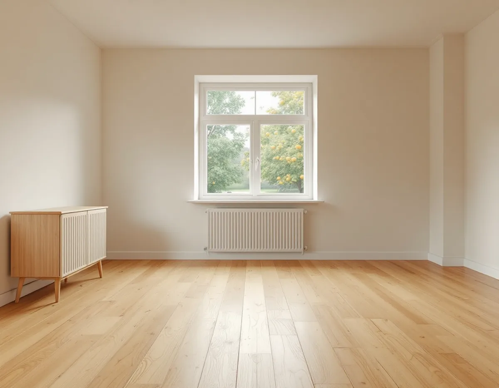
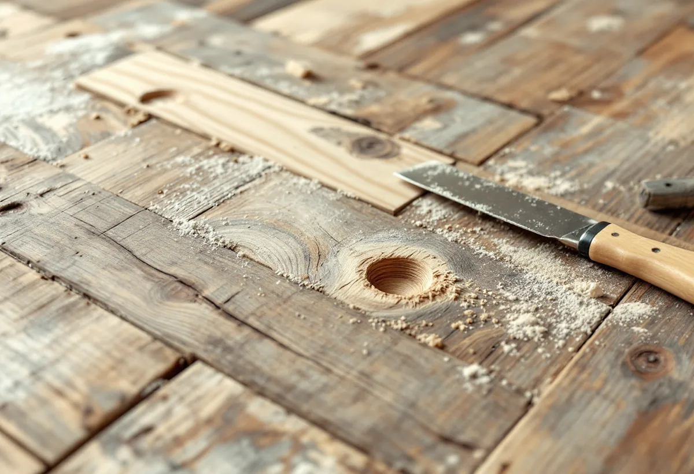

Platsbesök
Vi går över golvet bräda för bräda och mäter fukten i träet och i rummet.
Ett trägolv som har legat i många år kan ha märken som en slipning inte tar bort: en spjälkad kant, ett öppet kvisthål, en bräda som står högre än grannen. Sådant lagas innan maskinen startar. Geal Entreprenad AB slipar och ytbehandlar trägolv i Haninge och går igenom golvet bräda för bräda innan vi föreslår vad som ska göras.

Haninges karaktärsmiljöer beskriver folkhemsbygget 1940–1960-tal som områden med små enhetliga villor, kedjehus eller radhus samlade i grupphusbebyggelse. 1940-talets småhusområden består av enkelt utformade en- eller tvåplansvillor i trä, puts eller fasadtegel, och 1950-talets villa- och kedjehusområden har oftast kombinerade fasadmaterial. Som exempel nämns Handen, Jordbro, Vendelsö, Vendelsömalm och Västerhaninge.
Rekordårens småhus från 1960–1980-tal är enligt samma dokument oftast uppförda som grupphus med enhetlighet inom området, och en- och en halvplansvillor är vanliga. Exempel finns i Jordbro, Brandbergen, Västerhaninge och Handen. Hur golvet i just ditt hus ser ut avgör vi på plats.

Golvbranschens bedömningsgrunder för massiva trägolv listar lämpliga åtgärder för olika fel. Urspjälkning och kantskador, till exempel efter ett hammarslag, åtgärdas med byte av stav eller bräda, och mindre fel spacklas eller repareras. Öppna kvisthål och kvistsprickor spacklas, och ytan bättras med lack eller olja.
Tryckmärken, repor och skador i ytan kan vid mycket små fel punktförbättras, men i svårare fall byts brädan. Därför går vi igenom märkena innan vi slipar, och en bräda med en svår skada byts före slipningen.
Är en del av slitskiktet lös, till exempel i ett lamellgolv, ska den enligt riktlinjerna för slipning, SLIP 22, limmas fast före slipningen.
Även listerna hör till jobbet. Bedömningsgrunderna anger att hammarslag och andra skador på lister spacklas och ytbehandlas eller att listen byts. En springa mellan golv och sockel bedöms efter tillverkarens krav på expansionsutrymme och kan åtgärdas med en ny sockel eller en kvartstav. Vi går därför igenom listerna samtidigt som brädorna.
Ett fogsprång är när två brädor ligger på olika höjd. Bedömningsgrunderna anger att enstaka fogsprång åtgärdas med byte av bräda, eller på ett oljat golv med punktslipning och omoljning, och att ett bestående fogsprång får vara högst ±0,3 millimeter.
Springor, buktiga brädor och missljud hanteras annorlunda. För dem säger bedömningsgrunderna att orsaken först ska utredas och att åtgärden beror på resultatet. En bräda som har kupat sig, alltså buktat uppåt, eller skålat sig neråt får vara högst en procent av brädans bredd. Golvbranschens handbok Trägolv på golvvärme beskriver att trägolv får springor och skålning när inomhusluften är torr på vintern och kan kupa sig när luften är fuktig på sommaren. En buktighet som kommer av klimatet kan alltså komma tillbaka efter en slipning.
Därför mäter vi fuktkvoten i träet och luftfuktigheten i rummet innan vi föreslår slipning. Riktlinjerna säger att golvet inte ska ytbehandlas när fuktkvoten ligger utanför 6–10 procent eller luftfuktigheten utanför 30–60 procent.
Fuktskador och svikt står också bland de fel där orsaken ska utredas först. SLIP 22 säger att den som misstänker att slitskiktet kan lossna vid eller efter slipning, till exempel när golvet är vattenskadat, bör avråda från en omslipning. Samma sak gäller när slipningen antas bli orimligt dyr.
Sviktar golvet kan slipningen dessutom ge en vågig yta, ondulering. Går svikten inte att åtgärda före slipningen ska du enligt riktlinjerna få veta risken innan arbetet börjar. I ett hus med källare eller souterräng tittar vi gärna på bjälklaget underifrån när det går.
Är golvet så skadat att det är bättre att lägga nytt beskrivs det under golvläggare i Haninge. Fler golvtyper finns på sidan om golvläggning.
Vi går över golvet bräda för bräda och mäter fukten i träet och i rummet.
Byten av brädor, spackling, slipning och ytbehandling står som egna poster.
Skadade brädor byts, lösa partier limmas och kvisthål spacklas.
Golvet slipas i tre steg till en jämn yta, och kanterna slipas för sig.
Lack, olja eller hårdvaxolja i det antal lager golvet behöver.
Vi visar vad som har lagats och lämnar råd om klimat och skötsel.
Skatteverket räknar att slipa och byta golv som rotarbete i småhus. Avdraget gäller arbetad tid på plats.
Avdraget är 30 procent av arbetskostnaden, högst 50 000 kr per person och år och högst 75 000 kr tillsammans med rutavdrag. Brädor, spackel, lack och resor ger inget avdrag. Geal drar avdraget direkt på fakturan.
Golvytan, hur många brädor som behöver bytas eller lagas, om fuktorsaker behöver utredas och vilken ytbehandling du väljer. Efter ett gratis platsbesök får du ett skriftligt kostnadsförslag.
Parkett, trägolv, klinker och slipning.
Golvläggning i Stockholm →Takbyte, takbesiktning och plåtarbeten.
Takläggare i Haninge →Dalarö, Vendelsö och Brandbergen.
Takrenovering i Haninge →Skjutfält, kulturmiljö och skärgårdstomter.
Attefallshus i Haninge →Vakuumtoalett, sluten tank och öarna.
Badrumsrenovering i Haninge →Nytt hus och tillbyggnad i omvandlingsområden.
Byggföretag i Haninge →Mustiga 50-tal och pastell.
Fasadmålning i Haninge →Tegelvillor, grupphus och panelade gårdar.
Fasadrenovering i Haninge →Sportstugor och fönster i skärgårdsväder.
Fönsterbyte i Haninge →Gårdens fönster, från boningshus till ladugård.
Fönsterrenovering i Haninge →Egnahem, sportstugor och hus i sluttning.
Golvläggare i Haninge →Egnahem, grupphus och Dalarö.
Köksrenovering i Haninge →Egnahem, grupphus och sommarvillor i Haninge.
Målare i Haninge →Falsad plåt, sjöbodar och beslag i Haninge.
Plåtslagare i Haninge →Verandor, altaner och skärmtak.
Snickare i Haninge →Kontrollplan och riskbedömning vid takbyte.
Takbyte i Haninge →Ny tapet och gamla lager i äldre villor.
Tapetsering i Haninge →Lov, situationsplan och kontrollplan.
Tillbyggnad i Haninge →